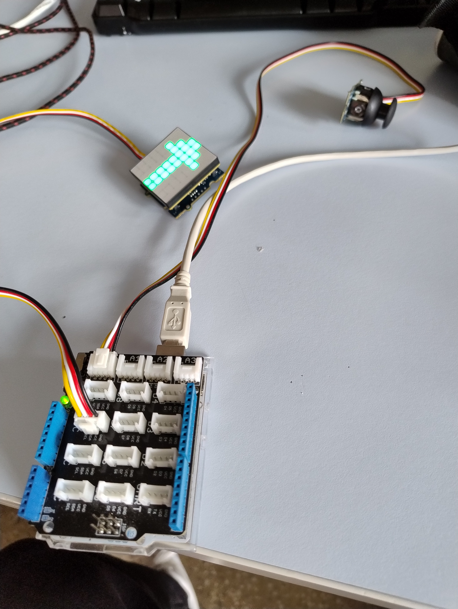

Fleche directionnel
STOP
Un peu plus de détails :
Nous étions une équipe de 3 personnes qui avaient pour projet de créer un afficheur portable permettant de signaler aux automobilistes la directon suivie sur un 2 roue
Le code a été réalisé sur arduino et la modélisation a été faite sur Soldiworks .
Une carte Arduino Uno, un joystick et une matrice LED 8 x 8 ont été utilisé .